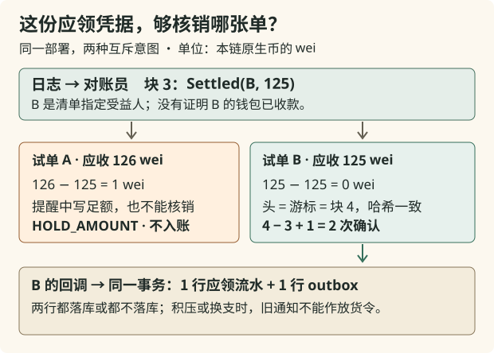

填「待处理，少 1 wei」。订单告诉你应该有多少，合约的结算记录告诉你为 B 记了多少。两次提醒只是两次请你查账，不是两笔来款；再等一个块也不会把 125 补成 126。这里核对的是 B 可以从托管合约领取的金额，连「B 已经领走 125」都不能写。
只在纸上改一个数：若当时结算记录写的是 B，126 wei，其余证据不变，还需要等吗？不需要。差额归零，第 3 块自身已算这张单要求的 1 次确认，可以记一笔足额应领。不要改原订单来凑数，也不要把这笔应领当作给钱包付款的回执。
只想读懂差异单，可以翻到第 21 课：签登录消息是在同意付款吗？。以下是选做的本地对账、恢复与卷末工单。动手前需要能认出本次部署、查原回执、用游标找出没有扫过的块、区分旧分支与当前分支。实验复用 MilestoneEscrow，只连接自有回环 Anvil 和临时 PostgreSQL；不开钱包，也不向仓库发货或投递消息。
先写下核销对象，再看到账提示
支付意图是业务系统预先承诺接受什么，不是让回调解释「刚才发生了什么」。运营端 OrderIntent.java 把订单号、链号、部署块哈希与高度、合约、受益人、资产、整数应收与最小确认数一次写入。清单要来自自己的发布交接；INSERT … SELECT … FROM scan_cursor 还要求受信清单与这一个数据库的部署锚点一致。回调不能创建意图、修改报价或分配地址。
业务约定是「合约替 B 登记了一笔可领取的原生币」。锁款只让状态变成 Locked，此时付款方仍可能在期限后退款；Settled 才让 B 获得应领，Withdrawn 才表明合约完成转出。三者是同一笔钱的不同阶段，不能相加。若合同要求「到 B 钱包才交付」，本服务的 BOOKED_AT_HEAD 不是那个交付条件，必须另验领取。这里没把交易的 value 当收入：调用 settle() 的那笔交易本身不需要再附 125 wei。
| 证据 | 谁给的 | 哪些字段说了算 |
|---|---|---|
| 意图 | 本地订单系统 | 链 31337、清单这次部署、B、native:31337、126 wei、确认门槛 |
| 观察 | 第 18 课逐块扫描，第 19 课标规范支 | 指定链与地址的唯一 Settled、indexed 受益人、整数字段、块高/哈希、交易哈希及 logIndex |
| 业务流水 | 对账事务 | 订单号只记一次，外键指回不可随重组删除的原始日志；不是钱包余额 |
| 通知意图（outbox） | 同一事务 | 订单号 + ENTITLEMENT_RECORDED 表示有一项应领入账可供复核；不是已经发出通知，更不是放货指令 |


判定顺序：先问「是哪一页账」，再问「差多少」
OrderApp.java 的 evaluate 在数据库事务里做以下几步。把金额判断提前是个常见错误：旧分支的 125 和新分支的 125 数字相同，不代表是同一份收据。
- 锁定订单，再以
FOR SHARE读第 18、19 课共用的第 1 行游标；扫描器修改这一行时持排他锁。核对服务加载的清单、意图和游标。它们指向同一部署后，另从节点读eth_chainId和latest块；头高、头哈希来自同一个块对象。若头落后于游标、或游标高度的当前规范哈希已不同，返回HOLD_REORG；若该哈希仍对、但头比游标高，返回HOLD_LAG。RPC/数据库不可用时接口报错，不能拿昨天最后一次成功当今天的绿灯。 - 仅当头与游标同高同哈希才看
canonical_log。没有Settled是WAIT_SETTLED，不是已付零；查出两条则拒绝猜测。已有流水还要比较先前入账的那一条完整证据；当前事件消失或换了，即HOLD_ORPHAN，不把新支上金额相等的另一条偷偷改成原单凭证。返回的bookingEvidence是历史证据，observed才是已核对这一页的事件。 - 这一个部署已知只收原生币，白名单只认可
native:31337，并按日志的actor匹配受益人。面值同为125的美元分和 wei 不能相减。只在资产正确时用BigInteger(expectedUnits) − BigInteger(amountWei)；differenceWei=1表示少 1，负数表示超付，示例中两者都转人工。Java 用整数，PostgreSQL 用numeric(78,0)，JSON 把最小单位作为十进制字符串，大于2⁵³也不经浏览器浮点数。 confirmations = headHeight − eventHeight + 1含事件本块。结算在 3，头也是 3，只有 1 次；要求 2 次时返回HOLD_DEPTH。块 4 已出但游标仍为 3 时，不能隔空加这一次；追到 4 且哈希相同时才是 2。本地确认门槛是业务策略，不是 PoS 最终化，也不是对下一秒链头的保证。
GET /orders/{id} 是只读判断，足额且尚未入账为 READY_TO_BOOK。POST /orders/{id}/callbacks/{key} 只是「请重查」：接收 Content-Type: application/json 但不绑定请求体。(order_id, hint_key) 重试只留一条到达记录；重复键也重新检查链头，不缓存上次的绿灯或挂起决定。独立的新提醒键可以不同，入账业务键仍是同一个订单号。book() 先插 order_booking，再插 order_outbox，最后由外层事务 commit()；任一步失败，关闭未提交连接时一起回滚。两个并发回调先争订单行锁，不会各看到一次「未入账」。表定义 还分别约束订单号、日志四元组和 outbox 订单号的唯一性；不是靠在 Java 里先 count(*) 再碰运气。
接口的 mayNotifyAsOfHead 只在本次读到的头仍支持既有流水时为 true。不存在跨节点和 PostgreSQL 的原子快照，提交后链仍可变。示例没有发送器。不要用 SELECT * FROM order_outbox 批量放货。真实消费者至少要按订单/通知种类去重，发送前用最新头再次核对，断连、换支或未追平时挂起；已经发出的消息/货物不能靠 SQL 回滚，必须另走告警、复核与补偿。若需求是不可逆交付，还要约定最终性策略、人工放行与外部系统幂等协议。
本地开单：同一张日志做三次互斥实验
工具沿用前课：JDK 21、Maven 3.9.x、web3j 4.12.3、Spring Boot 3.5.8、pgjdbc、PostgreSQL 17.5、Python 3.11 和 M04 的 Forge/Cast/Anvil 1.7.1。以下从仓库根目录执行。本课第一个案例用 --settle-wei 125 预装真实日志，再分别回放商户的三种意图，这是教学试算；真实订单应先定条款，不能付款以后为凑数换单。后面的工单按真实顺序先建意图再锁款。
终端 A：先按第 13 课工具准备安装工具，再运行：
export PATH="${XDG_CACHE_HOME:-$HOME/.cache}/chain-course/m04/bin:$PATH"
export FOUNDRY_SOLC="${XDG_CACHE_HOME:-$HOME/.cache}/chain-course/m04/bin/solc"
unset ANVIL
WORK=$(mktemp -d); printf '本轮目录 %s\n' "$WORK"
python3 labs/m04/deployment.py --out "$WORK/release" --settle-wei 125 --hold
终端 B：复制 A 的目录而非另一轮的清单。第一次起本卷的专用 Docker 容器时运行 bash labs/m05/db.sh start；已运行就复用，本步骤不要清空旧库。每个新部署使用一个全新数据库；示例库名 m05_orders 若已存在，请换尚不存在的 m05_ 加小写字母数字的名字。执行 build.sh 前需要 Maven 依赖已缓存或能下载。启动成功后让服务留在前台：
printf '粘贴本轮 WORK：'; IFS= read -r WORK
export M05_MANIFEST="$WORK/release/manifest.json" M05_DB=m05_orders
printf 'CREATE DATABASE %s;\n' "$M05_DB" | M05_DB=m05 bash labs/m05/db.sh sql
bash labs/m05/db.sh sql < labs/m05/schema.sql
bash labs/m05/db.sh sql < labs/m05/orders.sql
bash labs/m05/build.sh && bash labs/m05/run.sh Scan && bash labs/m05/run.sh OrderApp
终端 C：设好相同环境。每次演练从未用过这些订单号的库开始；不要并行挖块。完整的演练驱动只经 CLI 创建/退役意图，经 HTTP 提醒和查询，不往索引表塞事件。需要 cast 挖一个本地空块：
printf '粘贴本轮 WORK：'; IFS= read -r WORK
export M05_MANIFEST="$WORK/release/manifest.json" M05_DB=m05_orders
export PATH="${XDG_CACHE_HOME:-$HOME/.cache}/chain-course/m04/bin:$PATH"
set -o pipefail
python3 labs/m05/order_drill.py 125 | tee "$WORK/orders.jsonl"
驱动的次序是：OrderIntent create short-20 native:31337 126 1 → 回调 → OrderIntent retire short-20；再开 asset-20 invoice:USD 125 1，回调后也退役；最后开 match-20 native:31337 125 2。invoice:USD 明指「美元分计价的应收」，真实观察仍是 M04 原生币结算，没有模拟 ERC-20 转账。部分唯一索引使同一部署只能有一个 active 意图；CLI 只准退役未入账的试单、保留旧 ID 和条款，已入账则禁止退役或再分配。不要在生产中复用已展示给顾客的收款入口。
以下是预期差异表（新链从块 3 开始；哈希必须从自己的 JSONL 抄完整值）。— 不是数值零。
| 步骤 | 应收 / 实见 | 差额 wei | 头 / 游标 | 判断；业务结果 |
|---|---|---|---|---|
| short-20，回调自报 126 | 126 wei / 125 wei | 1 | 3 / 3 | HOLD_AMOUNT；0 流水 |
| asset-20 | 125 美分 / 125 wei | — | 3 / 3 | HOLD_ASSET；不比较数字，0 流水 |
| match-20，先只读 | 125 wei / 125 wei | 0 | 3 / 3 | HOLD_DEPTH，1 < 2 |
| 挖出块 4，扫描器未跑 | 125 wei / 尚未复核 | — | 4 / 3 | HOLD_LAG，lagBlocks=1；不放行 |
Scan 补扫无日志的块 4 |
125 wei / 125 wei | 0 | 4 / 4 | READY_TO_BOOK，2 次确认；GET 仍不入账 |
hint-a 两次，hint-b 一次 |
同一笔 125 wei 应领 | 0 | 4 / 4 | BOOKED_AT_HEAD；newHint=true,false,true，合计 1 流水、1 outbox |
自己加一次显然错误的金额。前两次 hint-a 的 body 已经不同，再发一次也不改变事实：
API=http://127.0.0.1:18020
curl --noproxy '*' -fsS -X POST "$API/orders/match-20/callbacks/hint-a" \
-H 'Content-Type: application/json' -d '{"amountWei":"999999","asset":"invoice:USD"}'
curl --noproxy '*' -fsS "$API/orders/match-20" | python3 -m json.tool
bash labs/m05/db.sh sql <<'SQL'
SELECT i.id,i.active,i.asset,i.expected_units,b.block_hash,b.tx_hash,b.log_index,n.kind
FROM payment_intent i LEFT JOIN order_booking b ON b.order_id=i.id
LEFT JOIN order_outbox n ON n.order_id=i.id ORDER BY i.id;
SQL
在 bookingEvidence 取完整 txHash，用 cast receipt --rpc-url http://127.0.0.1:18556 <该哈希> --json 查原回执：status 应成功，块哈希与流水一致，再按 logIndex、合约地址定位日志，而不是只比交易号。topics[0] 应是 cast keccak 'Settled(address,uint256)'，topics[1] 低 20 字节是 B，data 是 32 字节整数。上面的归档另有 release/receipts.json 的 settle 可用于离线交叉比对；换支后归档文件只证明当时保存过什么，不能替代当前规范块。
本课独立作业。 不改报价、不再调用任何托管函数：在已经 BOOKED_AT_HEAD 的 match-20 上用 cast rpc --rpc-url http://127.0.0.1:18556 evm_mine 再添一空块。立即重发上面的同键回调，把 JSON 交给仓库；用 bash labs/m05/run.sh Scan 补扫后再交第二份。判据：第一份有历史 bookingEvidence、newHint=false，但 HOLD_LAG 和 mayNotifyAsOfHead=false；第二份块高加一、证据四元组未改，才恢复 BOOKED_AT_HEAD。两份之间没有第二次入账。写出如果仓库只缓存第一次绿灯，会怎样误报。
卷末接手工单 E-520：备份还在块 1，结算却在块 3
需求改为 9,007,199,254,741,019 wei，约定 3 次确认；订单号 E-520。索引器停机期间客户完成锁款、结算。请从付款前的数据库备份接手，用真实节点补回两块；最后还要演示：发生开发链换支时，为什么一行仍在的 outbox 不代表应继续通知。换同事复跑时，另选一个 1..10¹⁸ 的整数字符串和一个新的订单号，先写下自己的差异表与预计确认高度，再动手。
1 · 开新交接，不挪旧单。 B 用 Ctrl-C 停上个服务，A 回车结束上条链；保留原实验目录与数据库。终端 A 在新的 WORK=$(mktemp -d) 中用 python3 labs/m04/deployment.py --out "$WORK/release" --hold 启动不带 --settle-wei 的新部署，记下 WORK 并保持运行。终端 B 如前 read -r WORK，再执行（m05_ticket、后面的 m05_restored 都要求没用过）：
export M05_DB=m05_ticket M05_MANIFEST="$WORK/release/manifest.json"
printf 'CREATE DATABASE %s;\n' "$M05_DB" | M05_DB=m05 bash labs/m05/db.sh sql
bash labs/m05/db.sh sql < labs/m05/schema.sql && bash labs/m05/db.sh sql < labs/m05/orders.sql
bash labs/m05/run.sh Scan
bash labs/m05/run.sh OrderIntent create E-520 native:31337 9007199254741019 3
bash labs/m05/db.sh dump > "$WORK/before-payment.dump" && test -s "$WORK/before-payment.dump"
bash labs/m05/run.sh OrderApp
此时只有部署块，before-payment.dump 是 pg_dump -Fc 的单库一致快照，含意图、索引、游标、约束和当时的业务表。它不是 Anvil 状态，不包含应用 JAR、链外请求、清单文件或集群角色。另保管同轮 release/ 与工程版本；只恢复可信备份。停写索引直到下一步结束。
2 · 制造真正的漏块，不改游标。 终端 C 设好新的 WORK、工具路径，地址取自本次可信清单。先向订单 API 查询应为 WAIT_SETTLED。保存快照号，在本机持有的节点上用解锁的临时付款方发两笔不同交易，绝不提供私钥：
printf '粘贴工单 WORK：'; IFS= read -r WORK
export M05_DB=m05_ticket M05_MANIFEST="$WORK/release/manifest.json"
export PATH="${XDG_CACHE_HOME:-$HOME/.cache}/chain-course/m04/bin:$PATH"
RPC=http://127.0.0.1:18556; API=http://127.0.0.1:18020
PAYER=$(python3 -c 'import json,os;print(json.load(open(os.environ["M05_MANIFEST"]))["deployer"])')
ESCROW=$(python3 -c 'import json,os;print(json.load(open(os.environ["M05_MANIFEST"]))["contractAddress"])')
curl --noproxy '*' -fsS "$API/orders/E-520" > "$WORK/initial.json"
SNAP=$(cast rpc --rpc-url "$RPC" evm_snapshot | tr -d '"')
cast send --rpc-url "$RPC" --unlocked --from "$PAYER" "$ESCROW" 'lock()' \
--value 9007199254741019 --json > "$WORK/lock.json" && \
cast send --rpc-url "$RPC" --unlocked --from "$PAYER" "$ESCROW" 'settle()' --json > "$WORK/settle.json"
curl --noproxy '*' -fsS "$API/orders/E-520" | tee "$WORK/before-recovery.json"
两笔都要有成功回执；若超时先查已有哈希，不重发。before-recovery.json 预期 headHeight=3,cursorHeight=1,lagBlocks=2,decision=HOLD_LAG。这里漏掉的是有真实 Locked、Settled 的两块，不是手工删除 SQL 行。B 用 Ctrl-C 停服务，A 不动。确保旧读写进程/发送器未在运行，切库时不要让新旧两个实例同时受理。
3 · 恢复到空库、先查缺口、再追平。 终端 B 执行以下内容后留在服务前台：
export M05_DB=m05_restored
bash labs/m05/db.sh restore < "$WORK/before-payment.dump" || exit 1
bash labs/m05/db.sh sql <<'SQL' || exit 1
SELECT height,block_hash FROM scan_cursor;
SELECT id,expected_units,min_depth FROM payment_intent;
SELECT count(*) AS bookings_at_backup FROM order_booking;
SQL
bash labs/m05/run.sh OrderApp
restore 先 createdb，再 pg_restore 到新空库；若同名存在会失败，不要忽略错误继续启动。恢复点应是 1 / E-520 / 9007199254741019 / 3 / 0 条流水，RPC 仍是原链而不是另一次部署。C 切到恢复库，定义一次提示函数，每次都传错误的自报数字：
export M05_DB=m05_restored
hint() { curl --noproxy '*' -fsS -X POST "$API/orders/E-520/callbacks/recheck-520" \
-H 'Content-Type: application/json' -d '{"amountWei":"1"}'; }
hint | tee "$WORK/restored-lag.json"
bash labs/m05/run.sh Recover
hint | tee "$WORK/one-confirmation.json"
cast rpc --rpc-url "$RPC" evm_mine && cast rpc --rpc-url "$RPC" evm_mine
bash labs/m05/run.sh Scan
hint | tee "$WORK/booked.json"; hint | tee "$WORK/retried.json"
bash labs/m05/db.sh sql <<'SQL'
SELECT height,kind,actor,amount_wei,tx_hash,log_index FROM canonical_log ORDER BY height,log_index;
SELECT b.order_id,b.block_hash,b.tx_hash,b.log_index,n.kind
FROM order_booking b JOIN order_outbox n USING(order_id);
SQL
读这几份输出时，认准两个不同的编号。recheck-520 区分「这是哪一次提醒」，订单号 E-520 才回答「哪张单只许记一次」。把同一个提醒键和自报金额 1 交给服务：恢复旧库后，头 3、游标 1，先得 HOLD_LAG。Recover 核对游标分支，再从块 1 往后扫出 Locked@2 和 Settled@3；第一条是锁进去的钱，第二条才是受益人的应领，不能把两条相加。再看 one-confirmation.json：现在能核金额，但 3−3+1=1，所以是 HOLD_DEPTH。
挖两空块、补扫后，查看 booked.json 与 retried.json：同一条结算已有 5−3+1=3 次确认，两个回答都是 BOOKED_AT_HEAD。用 SQL 输出的块哈希、交易哈希和日志索引找回 settle.json 的原记录，核对受益人与金额。证据没换、订单没换，重试后仍只有一条流水和一条待通知记录，这才是可交接的结果。数据库备份以后新开的链外订单、发出的通知，不会因补扫链上区块自动回来；本例把订单建在备份前，也没有外部发送，真实交接还须另存订单与通知记录，并与接收方去重。
4 · 证明旧 outbox 不能直接发。 只在这条自建 Anvil 上回到第 2 步付款前的快照。先看 evm_revert 返回 true；换支后不再锁款，也不造一条反向 Refunded。C 连续核对：
cast rpc --rpc-url "$RPC" evm_revert "$SNAP"
hint | tee "$WORK/rewound.json"
cast rpc --rpc-url "$RPC" evm_mine
bash labs/m05/run.sh Recover
hint | tee "$WORK/orphaned.json"
bash labs/m05/db.sh sql <<'SQL'
SELECT b.order_id,c.height,c.canonical,n.kind FROM order_booking b
JOIN chain_block c ON (c.chain_id,c.hash)=(b.chain_id,b.block_hash)
JOIN order_outbox n ON n.order_id=b.order_id;
SQL
判据：刚回到块 1 而游标还在 5，HOLD_REORG；只有较短的相同前缀还不能证明旧支错误。在付款前状态挖一个空块 2，与旧支含 Locked 的块 2 哈希必不相同，第 19 课才有换支的正面证据。Recover 退回共同祖先 1、补扫新块 2 后，规范支没有结算，历史流水指向 canonical=false 的旧块 3，HOLD_ORPHAN、mayNotifyAsOfHead=false。唯一的 outbox 仍指向那条旧应领记录，供审计而不是发送；不删除流水、不伪造退款、不因同一订单再次被提示就重新入账。
交付物：带版本的运行环境记录；本轮清单及两笔成功回执；付款前 dump（注明库名、游标高/哈希与恢复后的新库名）；真实 JSONL/JSON 和一张标明「意图资产、应收单位、实见、差额或不可比、头/游标及哈希、判断、流水/通知数」的差异表。最终回答三个可核问题：哪一笔结算曾支持应领、现在为什么不再支持、哪一个持久化键能让接班人重新查到它。最后 B 停服务、A 停链；需要保留的临时库先分别 dump，bash labs/m05/db.sh stop 会移除本卷临时容器及库。不要把真实订单、客户身份或密钥放进归档。
查证原文
- Solidity 0.8.28：Events 与本课合约实际的事件和状态更新：事件描述哪次调用，业务含义由源码和意图共同确定。
- PostgreSQL 17：显式行锁、唯一约束、pg_dump、pg_restore：区分并发互斥、持久化业务键和备份恢复点。
- Spring MVC：按方法、路径和媒体类型映射请求；Ethereum Execution APIs：块与规范链查询。